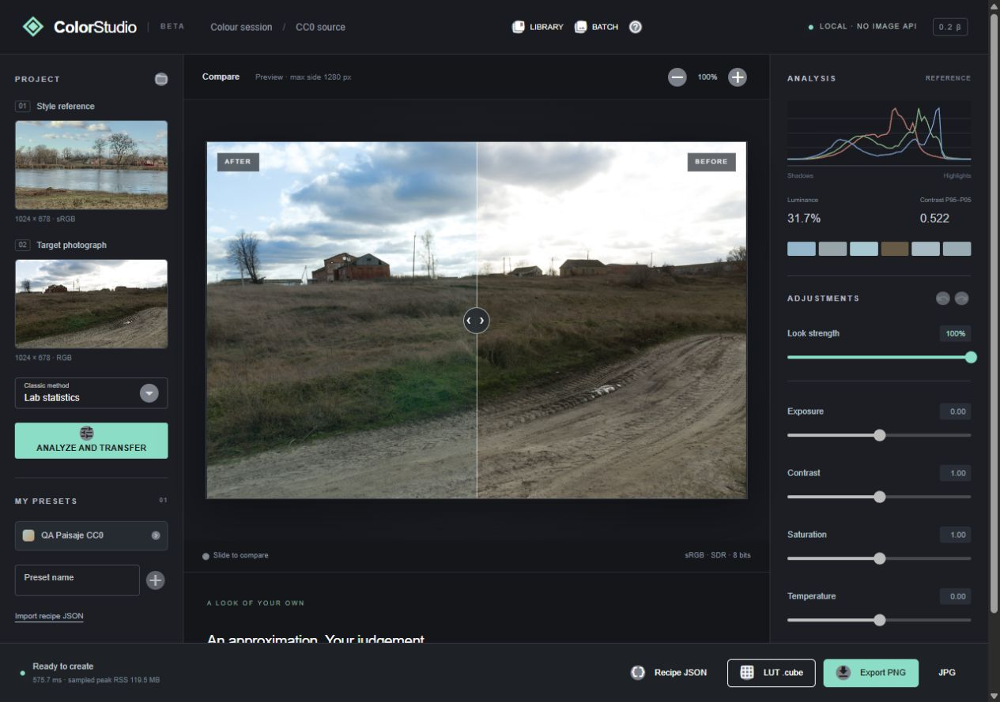
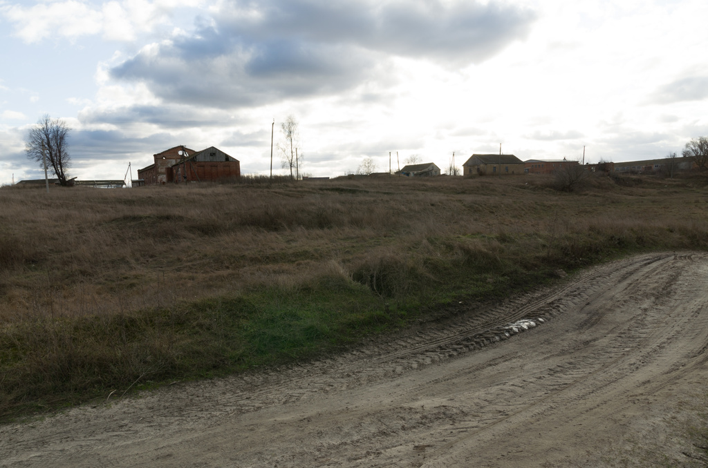
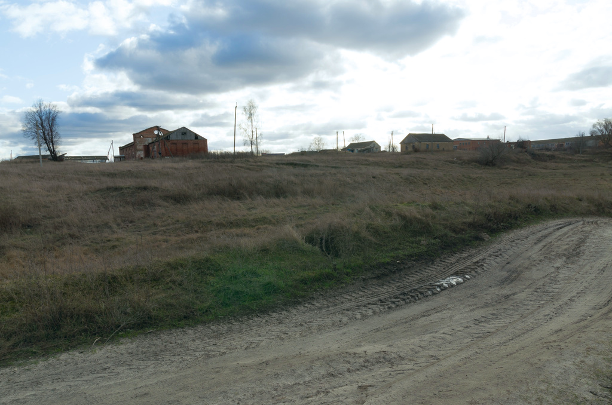

Una referencia.
Un color tuyo.
Explora el color de una imagen, aplícalo a tu fotografía y termina el look con tus propios ajustes. En tu equipo, sin subir tus fotos.
Conocer la beta ↗
Encuentra el tono.
Conserva el control.
- 01
Importa dos imágenes
Tu fotografía y una referencia cuyo uso tengas autorizado. JPG o PNG de hasta24 MP.
- 02
Analiza y afina
Transferencia global Lab, comparación deslizable, intensidad, exposición, contraste, saturación y temperatura.
- 03
Llévate el look
Guarda presets en grupos, procesa un lote y exporta PNG, JPG, receta JSON o LUT33³ sRGB.
El mismo paisaje.
Otra intención.
Comparación generada con la transformación global de la beta. No representa pruebas con clientes ni calidad validada para todo tipo de fotografía.


DESPUÉSANTESFotografías de Sergej Majboroda / Poly Haven, CC0. Derivados sRGB1024px sin EXIF. Procedencia y hashes en créditos.
El estudio está
en tu ordenador.
Sin cuenta, telemetría ni API externa de imagen. El motor se incluye en el instalador y procesa localmente. Los originales se conservan.
- Biblioteca personal
- Presets editables, grupos y recetas JSON portables.
- Un estilo, varias fotos
- Lotes básicos cancelables, resultados separados y recuperación de estado.
- Formatos abiertos
- Imágenes sRGB8 y LUT .cube global. No incluye máscaras ni adaptación individual en la LUT.
- Una beta honesta
- Sin RAW, HDR, Log, editor de vídeo o IA generativa. La compatibilidad con editores externos sigue pendiente.
Prueba primero.
Decide después.
Instalador x64 para evaluar el flujo completo sin Python ni Node. Windows10/11 y WebView2; propuesta inicial8 GB de RAM y2 GB libres, por validar en equipos limpios. El instalador incluye WebView2 offline.
La beta aún no está firmada. Faltan pruebas de Windows limpio, fotografías de piel autorizadas, compatibilidad Adobe y revisión de licencias. No se ofrece a la venta.
Ver criterios y estado de evaluación ↗Preguntas frecuentes
¿Necesito conexión para editar?
El procesamiento no usa servicios externos. Windows, el runtime WebView2 o la descarga del instalador pueden tener sus propias necesidades de conexión y actualización.
¿Puedo usar las LUT en vídeo?
Se exporta .cube de33³ en sRGB codificado/SDR. La importación real en Photoshop, Premiere y Resolve aún no se ha verificado. No es una conversión de cámara Log/HDR a Rec.709.
¿El resultado siempre será igual a la referencia?
No. El método aproxima estadísticas globales de color. Escenas, luz y sujetos distintos necesitan tu criterio; no hay validación universal de piel o calidad profesional.
¿Cuánto cuesta?
No hay precio ni cobros activos. Se propone una beta técnica por invitación mientras se investiga el valor con usuarios reales.
¿Cómo recibo soporte?
Para errores sin datos personales puedes usar una Issue de GitHub. No adjuntes fotografías privadas. El titular debe definir el canal privado y las condiciones de soporte antes del lanzamiento.